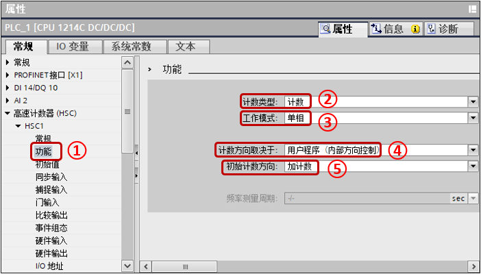

应用举例¶
假设在旋转机械上有单相增量编码器作为反馈，接入到 S7-1200 CPU，要求在计数 25000 个脉冲时，计数器复位，置位 M0.5，并设定新预置值为 50000 个脉冲，当计满 50000 个脉冲后复位 M0.5，并将预置值再设为 25000，周而复始执行此功能。
针对此应用，选择 CPU 1214C，高速计数器为：HSC1。模式为：单相计数，内部方向控制，无外部复位。脉冲输入接入 I0.0，使用 HSC1 的计数值等于参考值 1 中断（CV=RV）功能实现此应用。
组态步骤：先在设备与组态中，选择 CPU，单击属性，激活高速计数器，并设置相关参数。此步骤必须事先执行，S7-1200 的高速计数器功能必须要先在硬件组态中激活，才能进行下面的步骤。添加硬件中断块，关联相对应的高速计数器所产生的预置值中断，在中断块中添加高速计数器指令块，编写修改预置值程序，设置复位计数器等参数。将程序下载，执行功能。
硬件组态¶
如图 1 所示，进入 CPU 的硬件视图。

图 1. 选中CPU
①展开 PLC，左键双击设备组态
②在 CPU 硬件视图，左键选中 CPU
如图 2 所示，启用高速计数器。
{kind=link}
图 2. 选择属性打开组态界面
①左键选择属性
②在导航栏中选择"高速计数器（HSC）“，在 HSC1 中选择"常规”
③勾选"启用该高速计数器"
如图 3 所示，设置高速计数器基本设置。

{kind=link}
图 3. 激活高速计数功能
①在 HSC1 中选择"功能"
②计数类型选择"计数"
③工作模式选择"单相"
④计数方向取决于选择"用户程序（内部方向控制）"
⑤初始计数方向选择"加计数"
如图 4 所示，设置计数器初始值。
{kind=link}
图 4. 计数器初始值
①在 HSC1 中选择"初始值"
②初始计数器值设置"0"
③初始参考值设置"25000"
如图 5 所示，组态事件。
{kind=link}
图 5. 事件组态
①在 HSC1 中选择"事件组态"
②激活"为计数器值等于参考值这一事件生成中断"
③左键点击该按钮在弹出页面选择所需的硬件中断
④如果没有硬件中断或者没有所需要的硬件中断，则左键点击按钮"新增"，会弹出页面，如图 6 所示
{kind=link}
图 6. 添加新的硬件中断
①选择"Hardware interrupt"
②注意该硬件中断的中断 OB 编号
③左键点击"确定"按钮
如图 7 所示，设置硬件输入点。
{kind=link}
图 7. 设置输入点
①在 HSC1 中选择"硬件输入"
②在时钟发生器输入中选择所需的 I 点，例如例子中的"I0.0"
如 图8 所示，查看 HSC 的计数值地址。
{kind=link}
图 8. 计数值地址
①在 HSC1 中选择"I/O 地址"
②起始地址到结束地址为 HSC 实际计数器值的地址，图中地址为 ID1000。
③组织块和过程映像一般设置默认，可以设置计数值在指定 OB 更新。
如图 9 所示，设置 I 点的输入滤波器时间。
{kind=link}
图 9. 输入滤波器
①在 CPU 或者信号板中找到使用的通道
②在输入滤波器设置合适的滤波值，固件 V4.0 版本开始需要设置，具体可以参考页面，为什么 S7-1200 高速计数器只能检测到低频率的脉冲信号。
至此硬件组态部分已经完成，下面进行程序编写。
程序编写¶
如图 10 所示，展开项目树中的 PLC 的程序块，选择所需的硬件中断。
{kind=link}
图 10. 打开硬件中断块
①左键双击打开所需的硬件中断
如图 11 所示，在指令列表中找到工艺指令 -- 计数 -- CTRL_HSC_EXT。
{kind=link}
图 11. 添加高速计数器
①在图中位置找到所需指令，将指令拖入硬件中断的程序编辑器，会产生如图 12 所示的调用选项，只能选择单个实例，单击"确定"按钮。
{kind=link}
图 12. 定义指令背景数据块
如图 13 所示，新建 DB，新建变量，数据类型为 HSC_Count。
{kind=link}
图 13. 高速计数器变量
①在数据类型处手动输入 HSC_Count，输入完回车确认。
如图 14 所示，在硬件中断内编程。\
{kind=link}
图 14. 硬件中断编程
程序段 1： M0.5 作为标志位，在 OB1 第一个扫描周期置位，参考下面图 15，该标志位为 1 时指代参考值为 25000 时，为 0 时指代参考值为 50000 时。
当进入中断时，反转标志位，并赋值新的参考值。
程序段 2：设置新的当前值为 0，设置新的当前值使能，设置新的参考值使能。
程序段 3：触发高速计数器指令
①输入高速计数器标识符，以 HSC1 为例，建议输入符号名"Local~HSC_1"而非只是数值。
②在 CTRL 处输入图 13 处新建的变量。
程序段 4：取消新的当前值使能，取消新的参考值使能。
如图 15 所示，在 OB1 中编写程序，初始化标志位 M0.5 以及软件门，然后将图 14 中的程序段 3 复制到 OB1 即可。
{kind=link}
图 15. OB1 程序
至此程序编制部分完成，将完成的组态与程序下载到 CPU 后即可执行，当前的计数值可在"DB2".Static_1.CurrentCount 中读出。